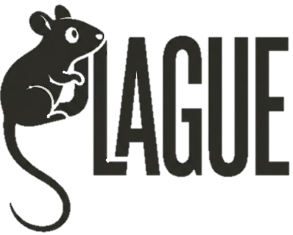

Bienvenidos a PLAGUE
Plataforma web orientada a dependencias gubernamentales encargadas de realizar y supervisar campañas de fumigación y control de plagas urbanas.
Iniciar sesión
Acerca del sistema
El sistema surge de la necesidad de organizar y centralizar la información relacionada con las campañas de fumigación, ya que el manejo de registros de forma manual o mediante diferentes herramientas puede dificultar el seguimiento de las inspecciones, diagnósticos, aplicaciones de productos y resultados obtenidos.
La plataforma estará dirigida principalmente a administradores, supervisores y técnicos de las dependencias encargadas de estas actividades, permitiendo gestionar de manera estructurada la información generada durante las campañas.
Inspecciones y Diagnósticos
Control de campo detallado.
Campañas y Coordenadas GPS
Seguimiento geolocalizado de zonas.
Contacto e Institución
Tecnológico Nacional de México Campus Villahermosa
Departamento de Sistemas y Computación
Villahermosa, Tabasco, México